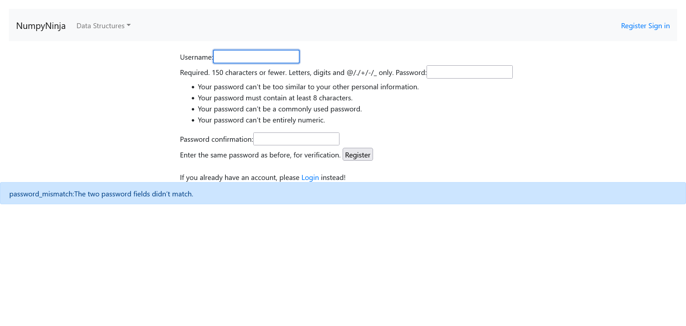

Started
Jul 9, 2023 09:14:47 PM
Ended
Jul 9, 2023 09:17:08 PM
Features Passed
10
Features Failed
1
Features
Scenarios
Steps
Timeline
Tags
| Name | Passed | Failed | Skipped | Others | Passed % |
|---|---|---|---|---|---|
| @datastructure | 1 | 0 | 0 | 0 | 100% |
System/Environment
| Name | Value |
|---|---|
| user | vijay |
| os | windows |
-
portal page
9:14:47 PM / 00:00:02:883 Pass
portal page
07.09.2023 9:14:47 PM 07.09.2023 9:14:50 PM 00:00:02:883 · #test-id=1PassLaunching portal page and getting startedGiven user opens portal pageWhen user clicks getting started buttonThen user should go to home pageAnd page title should be "NumpyNinja" -
User launch home page of an dsalgo project
9:14:50 PM / 00:00:03:879 Pass
User launch home page of an dsalgo project
07.09.2023 9:14:50 PM 07.09.2023 9:14:54 PM 00:00:03:879 · #test-id=10PassUser is on Home page and click getstarted link on home page without sign inPassUser is on Home page and click getstarted link on home page without sign inGiven The user opens Home PageWhen The user clicks on Get Started link on homepage "Datastructures" without loginThen The user get warning message "You are not logged in"PassUser is on Home page and click getstarted link on home page without sign inGiven The user opens Home PageWhen The user clicks on Get Started link on homepage "Arrays" without loginThen The user get warning message "You are not logged in"PassUser is on Home page and click getstarted link on home page without sign inGiven The user opens Home PageWhen The user clicks on Get Started link on homepage "Linkedlist" without loginThen The user get warning message "You are not logged in"PassUser is on Home page and click getstarted link on home page without sign inGiven The user opens Home PageWhen The user clicks on Get Started link on homepage "Stack" without loginThen The user get warning message "You are not logged in"PassUser is on Home page and click getstarted link on home page without sign inGiven The user opens Home PageWhen The user clicks on Get Started link on homepage "Queue" without loginThen The user get warning message "You are not logged in"PassUser is on Home page and click getstarted link on home page without sign inGiven The user opens Home PageWhen The user clicks on Get Started link on homepage "Tree" without loginThen The user get warning message "You are not logged in"PassUser is on Home page and click getstarted link on home page without sign inGiven The user opens Home PageWhen The user clicks on Get Started link on homepage "Graph" without loginThen The user get warning message "You are not logged in"PassUser is on Home page and click on RegisterGiven The user opens Home PageWhen The user clicks Sign inThen The user should be redirected to Sign in pagePassUser is on Home page and click on RegisterGiven The user opens Home PageWhen The user clicks RegisterThen The user should be redirected to Register form -
user registers with username and password
9:14:54 PM / 00:00:03:701 Fail
user registers with username and password
07.09.2023 9:14:54 PM 07.09.2023 9:14:58 PM 00:00:03:701 · #test-id=75PassThe user is presented with error message for empty fields below Username textboxGiven The user opens Register PageWhen The user clicks Register button with all fields emptyThen It should display an error "Please fill out this field." below Username textboxPassThe user is presented with error message for empty fields below Password textboxGiven The user opens Register PageWhen When The user clicks Register button after entering username with other fields emptyusername Numpy@sdet84_1 Then It should display an error "Please fill out this field." below Password textboxFailThe user is presented with error message for invalid usernameGiven The user opens Register PageWhen The user enters a username with characters other than Letters, digits and special charactersusername password password confirmation &**&**& testpassword testpassword Then It should display an error message "Please enter a valid username"appHooks.ApplicationHooks.tearDown(io.cucumber.java.Scenario)The user is presented with error message for invalid usernamePassThe user is presented with error message for password mismatchGiven The user opens Register PageWhen The user clicks Register button after entering valid username and different passwords in password and password confirmation fieldsusername password password confirmation aaa@gmail.com testpassword testpassword1 Then It should display an error message "password_mismatch:The two password fields didn’t match."FailThe user is succesfully able to registerGiven The user opens Register PageWhen The user enters a valid username and password and password confirmationusername password password confirmation pluton@gmail.com Nnsdet@115 Nnsdet@115 Then The user should be redirected to Homepage and pagetitle is "NumpyNinja"appHooks.ApplicationHooks.tearDown(io.cucumber.java.Scenario)The user is succesfully able to register
-
User Logins in with credentials
9:14:58 PM / 00:00:10:822 Pass
User Logins in with credentials
07.09.2023 9:14:58 PM 07.09.2023 9:15:09 PM 00:00:10:822 · #test-id=111PassThe user goes to registration page when register is clickedGiven The user is in the Sign in pageWhen The user clicks on register link on signin pageThen The user redirected to Registration page from signin page and title is "Registration"PassThe user is able to signin with registered credentialPassThe user is able to signin with registered credentialGiven The user is in the Sign in pageWhen The user enters a valid "pluton@gmail.com" and "Nnsdet@115"Then click login button to verify and pagetitle is "NumpyNinja"And logout of the pagePassUser on login page and login with invalid inputsPassUser on login page and login with invalid inputsGiven The user is in the Sign in pageWhen The user enter invalid "user" and "abcdefg"Then click login button to verify and pagetitle is "Login"PassUser on login page and login with invalid inputsGiven The user is in the Sign in pageWhen The user enter invalid "user1" and "passowrd"Then click login button to verify and pagetitle is "Login"PassUser on login page and login with invalid inputsGiven The user is in the Sign in pageWhen The user enter invalid "user3" and "password3"Then click login button to verify and pagetitle is "Login"PassUser on login page and login with invalid and valid inputs from ExcelPassUser on login page and login with invalid and valid inputs from ExcelGiven The user is in the Sign in pageWhen The user enter sheet "Sheet1" and 0Then click login button to verify title of the page "NumpyNinja"PassUser on login page and login with invalid and valid inputs from ExcelGiven The user is in the Sign in pageWhen The user enter sheet "Sheet1" and 1Then click login button to verify title of the page "NumpyNinja"PassUser on login page and login with invalid and valid inputs from ExcelGiven The user is in the Sign in pageWhen The user enter sheet "Sheet1" and 2Then click login button to verify title of the page "NumpyNinja"PassUser on login page and login with invalid and valid inputs from ExcelGiven The user is in the Sign in pageWhen The user enter sheet "Sheet1" and 3Then click login button to verify title of the page "NumpyNinja"PassVerifying signout linkGiven The user is in the Home page with valid log in "pluto@gmail.com" and "Nnsdet@115"When The user clicks Sign out -
Datastructure feature
9:15:09 PM / 00:00:03:343 Pass
Datastructure feature
07.09.2023 9:15:09 PM 07.09.2023 9:15:12 PM 00:00:03:343 · #test-id=185PassUser in DataStructure moduleGiven The user is in the Home page after logged inAnd User is clicks on Datastructuregetstarted buttonWhen user clicks on time complexity sub moduleThen user clicks on tryhere buttonGiven user sends valid pythoncode and click on run button and print the output in consoleWhen user navigates refreshThen user sends invalid syntax and click on run button and capture the alert messsageAnd user navigates backGiven user clicks on practice QuestionsThen user navigates back -
Testing Array Module
9:15:12 PM / 00:00:21:538 Pass
Testing Array Module
07.09.2023 9:15:12 PM 07.09.2023 9:15:34 PM 00:00:21:538 · #test-id=200Passuser is on the array pageGiven The user is in the Home page after logged inAnd user clicks on the dropdown in array modulePassUser checks valid code in submodule "Arrays in Python"PassUser checks valid code in submodule "Arrays in Python"Given user clicks on array in python submodule and user clicks on tryhere buttonWhen user sends valid python code in try editor from excel sheet "pythonCode" and 0Then user clicks on run button and user get the output in the consolePassUser checks invalid code in submodule "Arrays in Python"PassUser checks invalid code in submodule "Arrays in Python"Given user sends invalid syntax in try editor from excel sheet "pythonCode" and 1When user clicks on run buttonThen user gets the alert message and navigates backPassUser checks valid code in submodule "Arrays using List"PassUser checks valid code in submodule "Arrays using List"Given user clicks on array using list submodule and user clicks on tryhere buttonWhen user sends valid python code in try editor from excel sheet "pythonCode" and 0Then user clicks on run button and capture the output in consolePassUser checks invalid code in submodule "Arrays using List"PassUser checks invalid code in submodule "Arrays using List"Given user sends invalid syntax in try editor from excel sheet "pythonCode" and 1When user clicks on run buttonThen user gets the alert message and navigates backPassUser checks valid code in submodule "Basic operations in List"PassUser checks valid code in submodule "Basic operations in List"Given user clicks on Basic operations in list and user clicks on tryhere buttonWhen user sends valid python code in try editor from excel sheet "pythonCode" and 0Then user clicks on run button and capture the output in consolePassUser checks invalid code in submodule "Basic operations in List"PassUser checks invalid code in submodule "Basic operations in List"Given user sends invalid syntax in try editor from excel sheet "pythonCode" and 1When user clicks on run buttonThen user gets the alert message and navigates backPassUser checks valid code in submodule "Application of Array"PassUser checks valid code in submodule "Application of Array"Given user clicks on Application of array and user clicks on tryhere buttonWhen user sends valid python code in try editor from excel sheet "pythonCode" and 0Then user clicks on run button and capture the output in consolePassUser checks invalid code in submodule "Application of Array"PassUser checks invalid code in submodule "Application of Array"Given user sends invalid syntax in try editor from excel sheet "pythonCode" and 1When user clicks on run buttonThen user gets the alert message and navigates backPassUser checks valid code in submodule "Search the array"PassUser checks valid code in submodule "Search the array"Given user clicks on Practice QuestionWhen user clicks on search the array and clear the try editorThen user sends valid python code in try editor from excel sheet "pythonCode" and 2And user clicks on submit button and capture the output in consolePassUser checks invalid code in submodule "Search the array"PassUser checks invalid code in submodule "Search the array"Given user sends invalid syntax in try editor from excel sheet "pythonCode" and 1When user clicks on run buttonThen user gets the alert message and navigates backPassUser checks valid code in submodule "Max Consecutive Ones"PassUser checks valid code in submodule "Max Consecutive Ones"Given user clicks on max consecutive ones and clear the try editorWhen user sends valid python code in try editor from excel sheet "pythonCode" and 0Then user clicks on run button and capture the output in consolePassUser checks invalid code in submodule "Max Consecutive Ones"PassUser checks invalid code in submodule "Max Consecutive Ones"Given user sends invalid syntax in try editor from excel sheet "pythonCode" and 1When user clicks on run buttonThen user gets the alert message and navigates backPassUser checks valid code in submodule "Find numbers with even number of digits"PassUser checks valid code in submodule "Find numbers with even number of digits"Given user clicks on Find numbers with even number of digits and clear the try editorWhen user sends valid python code in try editor from excel sheet "pythonCode" and 0Then user clicks on run button and capture the output in consolePassUser checks invalid code in submodule "Find numbers with even number of digits"PassUser checks invalid code in submodule "Find numbers with even number of digits"Given user sends invalid syntax in try editor from excel sheet "pythonCode" and 1When user clicks on run buttonThen user gets the alert message and navigates backPassUser checks valid code in submodule "Squares of Sorted Array"PassUser checks valid code in submodule "Squares of Sorted Array"Given user clicks on the squares of sorted array and clear the try editorWhen user sends valid python code in try editor from excel sheet "pythonCode" and 0Then user clicks on run button and capture the output in consolePassUser checks invalid code in submodule "Squares of Sorted Array"PassUser checks invalid code in submodule "Squares of Sorted Array"Given user sends invalid syntax in try editor from excel sheet "pythonCode" and 1When user clicks on run buttonThen user gets the alert message and navigates back -
Testing Linked List Module
9:15:34 PM / 00:00:22:181 Pass
Testing Linked List Module
07.09.2023 9:15:34 PM 07.09.2023 9:15:56 PM 00:00:22:181 · #test-id=336PassThe user is able to signin with registered credentialPassThe user is able to signin with registered credentialGiven The user is in the Sign in pageWhen The user enters a valid "pluton@gmail.com" and "Nnsdet@115"Then click login button to verify and pagetitle is "NumpyNinja"PassUser navigated to "linked list" pageGiven The user is in the Home page after logged inWhen The user selecting "Linked List" item from the drop down menuThen The user should be directed to "Linked List" PagePassUser navigated to "Introduction" pageGiven The user is in the "Linked List" page after logged inWhen The user clicks "Introduction" link of Linked List pageThen The user should be directed to "Introduction" PagePassUser navigated to tryEditor page with Run button from Introduction pageGiven The user is on the "Introduction" page of Linked List after logged inWhen The user clicks Try Here buttonThen The user should be redirected to a page having an tryEditor with a Run button to testPassThe user run the code in tryEditor with valid input for Introduction pagePassThe user run the code in tryEditor with valid input for Introduction pageGiven The user is in a try here page having tryEditor with a Run button to testWhen The user gets input from sheet "pythonCode" and 0And user click on Run buttonThen The user should be presented with Run outputPassThe user getting error message with invalid python code for Introduction pagePassThe user getting error message with invalid python code for Introduction pageGiven The user is in a try here page having tryEditor with a Run button to testWhen The user gets invalid input from sheet "pythonCode" and 1And user click on Run buttonThen The user should be presented with the Run output with alertPassUser navigated to "Creating Linked LIst" pageGiven The user is in the "Linked List" page after logged inWhen The user clicks "Creating Linked LIst" link of Linked List pageThen The user should be directed to "Creating Linked LIst" PagePassUser navigated to tryEditor page with Run button from Creating a Linked List pageGiven The user is on the "Creating a Linked List" page of Linked List after logged inWhen The user clicks Try Here buttonThen The user should be redirected to a page having an tryEditor with a Run button to testPassThe user run the code in tryEditor with valid input for Creating a Linked List pagePassThe user run the code in tryEditor with valid input for Creating a Linked List pageGiven The user is in a try here page having tryEditor with a Run button to testWhen The user gets input from sheet "pythonCode" and 0And user click on Run buttonThen The user should be presented with Run outputPassThe user getting error message with invalid python code for Creating a Linked List pagePassThe user getting error message with invalid python code for Creating a Linked List pageGiven The user is in a try here page having tryEditor with a Run button to testWhen The user gets invalid input from sheet "pythonCode" and 1And user click on Run buttonThen The user should be presented with the Run output with alertPassUser navigated to "Types of linked list" pageGiven The user is in the "Linked List" page after logged inWhen The user clicks "Types of Linked List" link of Linked List pageThen The user should be directed to "Types of Linked List" PagePassUser navigated to tryEditor page with Run button from Types of Linked ListGiven The user is on the "Types of Linked list" page of Linked List after logged inWhen The user clicks Try Here buttonThen The user should be redirected to a page having an tryEditor with a Run button to testPassThe user run the code in tryEditor with valid input for Creating a Linked List pagePassThe user run the code in tryEditor with valid input for Creating a Linked List pageGiven The user is in a try here page having tryEditor with a Run button to testWhen The user gets input from sheet "pythonCode" and 0And user click on Run buttonThen The user should be presented with Run outputPassThe user getting error message with invalid python code for Creating a Linked List pagePassThe user getting error message with invalid python code for Creating a Linked List pageGiven The user is in a try here page having tryEditor with a Run button to testWhen The user gets invalid input from sheet "pythonCode" and 1And user click on Run buttonThen The user should be presented with the Run output with alertPassuser navigated to "Implementation linked list in python" pageGiven The user is in the "Linked List" page after logged inWhen The user clicks "Implement Linked List in Python" link of Linked List pageThen The user should be directed to "Implement Linked List in Python" PagePassUser navigated to tryEditor page with Run button from Types of Linked ListGiven The user is on the "Implement Linked List in Python" page of Linked List after logged inWhen The user clicks Try Here buttonThen The user should be redirected to a page having an tryEditor with a Run button to testPassThe user run the code in tryEditor with valid input for Creating a Linked List pagePassThe user run the code in tryEditor with valid input for Creating a Linked List pageGiven The user is in a try here page having tryEditor with a Run button to testWhen The user gets input from sheet "pythonCode" and 0And user click on Run buttonThen The user should be presented with Run outputPassThe user getting error message with invalid python code for Creating a Linked List pagePassThe user getting error message with invalid python code for Creating a Linked List pageGiven The user is in a try here page having tryEditor with a Run button to testWhen The user gets invalid input from sheet "pythonCode" and 1And user click on Run buttonThen The user should be presented with the Run output with alertPassuser navigated to "Traversal" pageGiven The user is in the "Linked List" page after logged inWhen The user clicks "Traversal" link of Linked List pageThen The user should be directed to "Traversal" PagePassUser navigated to tryEditor page with Run button from Types of Linked ListGiven The user is on the "Traversal" page of Linked List after logged inWhen The user clicks Try Here buttonThen The user should be redirected to a page having an tryEditor with a Run button to testPassThe user run the code in tryEditor with valid input for Creating a Linked List pagePassThe user run the code in tryEditor with valid input for Creating a Linked List pageGiven The user is in a try here page having tryEditor with a Run button to testWhen The user gets input from sheet "pythonCode" and 0And user click on Run buttonThen The user should be presented with Run outputPassThe user getting error message with invalid python code for Creating a Linked List pagePassThe user getting error message with invalid python code for Creating a Linked List pageGiven The user is in a try here page having tryEditor with a Run button to testWhen The user gets invalid input from sheet "pythonCode" and 1And user click on Run buttonThen The user should be presented with the Run output with alertPassuser navigated to "Insertion" pageGiven The user is in the "Linked List" page after logged inWhen The user clicks "Insertion" link of Linked List pageThen The user should be directed to "Insertion" PagePassUser navigated to tryEditor page with Run button from Types of Linked ListGiven The user is on the "Insertion" page of Linked List after logged inWhen The user clicks Try Here buttonThen The user should be redirected to a page having an tryEditor with a Run button to testPassThe user run the code in tryEditor with valid input for Creating a Linked List pagePassThe user run the code in tryEditor with valid input for Creating a Linked List pageGiven The user is in a try here page having tryEditor with a Run button to testWhen The user gets input from sheet "pythonCode" and 0And user click on Run buttonThen The user should be presented with Run outputPassThe user getting error message with invalid python code for Creating a Linked List pagePassThe user getting error message with invalid python code for Creating a Linked List pageGiven The user is in a try here page having tryEditor with a Run button to testWhen The user gets invalid input from sheet "pythonCode" and 1And user click on Run buttonThen The user should be presented with the Run output with alertPassuser navigated to "Deletion" pageGiven The user is in the "Linked List" page after logged inWhen The user clicks "Deletion" link of Linked List pageThen The user should be directed to "Deletion" PagePassUser navigated to tryEditor page with Run button from Types of Linked ListGiven The user is on the "Deletion" page of Linked List after logged inWhen The user clicks Try Here buttonThen The user should be redirected to a page having an tryEditor with a Run button to testPassThe user run the code in tryEditor with valid input for Creating a Linked List pagePassThe user run the code in tryEditor with valid input for Creating a Linked List pageGiven The user is in a try here page having tryEditor with a Run button to testWhen The user gets input from sheet "pythonCode" and 0And user click on Run buttonThen The user should be presented with Run outputPassThe user getting error message with invalid python code for Creating a Linked List pagePassThe user getting error message with invalid python code for Creating a Linked List pageGiven The user is in a try here page having tryEditor with a Run button to testWhen The user gets invalid input from sheet "pythonCode" and 1And user click on Run buttonThen The user should be presented with the Run output with alertPassThe user validating "Practice Questions" pageGiven The user is in the "Linked List" page after logged inWhen The user clicks "Introduction" link of Linked List pageAnd The user clicks on the "Practice Questions"Then The user should be directed to "Practice Questions" Page -
user log in with credentials
9:15:56 PM / 00:00:11:712 Pass
user log in with credentials
07.09.2023 9:15:56 PM 07.09.2023 9:16:08 PM 00:00:11:712 · #test-id=584PassThe user is able to signin with registered credentialPassThe user is able to signin with registered credentialGiven The user is in the Sign in pageWhen The user enters a valid "pluton@gmail.com" and "Nnsdet@115"Then click login button to verify and pagetitle is "NumpyNinja"PassThe user is directed to "Stack" PageGiven The user is in the Home page after logged inWhen The user selecting "Stack" item from the drop down menuThen The user should be directed to "Stack" PagePassThe user is able to navigate "to operations in Stack page"Given The user is in the "Stack" page after logged inWhen user clicks on "Operations in Stack" linkThen The user should be directed to "Operations in Stack" PagePassThe user is able to navigate to a page having an tryEditorGiven The user is on the "Operations in Stack" after logged inWhen The user clicks Try Here buttonThen The user should be redirected to a page having an tryEditor with a Run button to testPassThe user is able to run code in tryEditorPassThe user is able to run code in tryEditorGiven The user is in a try here page having tryEditor with a Run button to testWhen The user gets input from sheet "pythonCode" and 0And user click on Run buttonThen The user should be presented with Run outputPassThe user is able to get the error message for invalid syntaxPassThe user is able to get the error message for invalid syntaxGiven The user is in a try here page having tryEditor with a Run button to testWhen The user gets invalid input from sheet "pythonCode" and 1And user click on Run buttonThen The user should be presented with the Run output with alertPassThe user is able to navigate to "Implementation" PageGiven The user is in the "Stack" page after logged inWhen user clicks on "Implementation" linkThen The user should be directed to "Implementation" PagePassThe user is able to navigate to Implementation page having an tryeditorGiven The user is on the "Implementation" after logged inWhen The user clicks Try Here buttonThen The user should be redirected to a page having an tryEditor with a Run button to testPassThe user is able to run code in tryEditorPassThe user is able to run code in tryEditorGiven The user is in a try here page having tryEditor with a Run button to testWhen The user gets input from sheet "pythonCode" and 0And user click on Run buttonThen The user should be presented with Run outputPassThe user is able to get the error message for invalid syntaxPassThe user is able to get the error message for invalid syntaxGiven The user is in a try here page having tryEditor with a Run button to testWhen The user gets invalid input from sheet "pythonCode" and 1And user click on Run buttonThen The user should be presented with the Run output with alertPassThe user is able to navigate to "Applications" PageGiven The user is in the "Stack" page after logged inWhen user clicks on "Applications" linkThen The user should be directed to "Applications" PagePassThe user is able to navigate to Applications page having an tryeditorGiven The user is on the "Applications" after logged inWhen The user clicks Try Here buttonThen The user should be redirected to a page having an tryEditor with a Run button to testPassThe user is able to run code in tryEditorPassThe user is able to run code in tryEditorGiven The user is in a try here page having tryEditor with a Run button to testWhen The user gets input from sheet "pythonCode" and 0And user click on Run buttonThen The user should be presented with Run outputPassThe user is able to get the error message for invalid syntaxPassThe user is able to get the error message for invalid syntaxGiven The user is in a try here page having tryEditor with a Run button to testWhen The user gets invalid input from sheet "pythonCode" and 1And user click on Run buttonThen The user should be presented with the Run output with alertPassThe user is able to navigate to "Practice Questions" in stack PageGiven The user is in the "Stack" page after logged inWhen user clicks on "Operations in Stack" linkWhen The user clicks on the "Practice Questions" linkThen The user should be directed to "Practice Questions" Page -
user log in with credentials
9:16:08 PM / 00:00:15:248 Pass
user log in with credentials
07.09.2023 9:16:08 PM 07.09.2023 9:16:24 PM 00:00:15:248 · #test-id=704PassThe user is able to signin with registered credentialPassThe user is able to signin with registered credentialGiven The user is in the Sign in pageWhen The user enters a valid "pluton@gmail.com" and "Nnsdet@115"Then click login button to verify and pagetitle is "NumpyNinja"PassThe user is directed to "Queue" PageGiven The user is in the Home page after logged inWhen The user selecting "Queue" item from the drop down menuThen The user should be directed to "Queue" PagePassThe user is able to navigate to Implementation of Queue in Python link pageGiven The user is in the "Queue" page after logged inWhen The user clicks on "Implementation of Queue in Python" linkThen The user should be directed to "Implementation of Queue in Python" PagePassThe user should be directed to editor page with run button to test python codeGiven The user is on the "Implementation of Queue in Python" page in queue after logged inWhen The user clicks Try Here buttonThen The user should be redirected to a page having an tryEditor with a Run button to testPassThe user is able to run code in Editor for Implementation of queue pagePassThe user is able to run code in Editor for Implementation of queue pageGiven The user is in a try here page having tryEditor with a Run button to testWhen The user gets input from sheet "pythonCode" and 0And user click on Run buttonThen The user should be presented with Run outputPassThe user is presented with error message for invalid code in Editor for Implementation of queue pagePassThe user is presented with error message for invalid code in Editor for Implementation of queue pageGiven The user is in a try here page having tryEditor with a Run button to testWhen The user gets invalid input from sheet "pythonCode" and 1And user click on Run buttonThen The user should be presented with the Run output with alertPassThe user is able to navigate to queue page and click on Implementation using collections deque linkGiven The user is in the "Queue" page after logged inWhen The user clicks on "Implementation using collections.deque" linkThen The user should be directed to "Implementation using collections.deque" PagePassThe user should be directed to editor page with run button to test python codeGiven The user is on the "Implementation using collections.deque" page in queue after logged inWhen The user clicks Try Here buttonThen The user should be redirected to a page having an tryEditor with a Run button to testPassThe user is able to run code in Editor for Implementation of queue pagePassThe user is able to run code in Editor for Implementation of queue pageGiven The user is in a try here page having tryEditor with a Run button to testWhen The user gets input from sheet "pythonCode" and 0And user click on Run buttonThen The user should be presented with Run outputPassThe user is presented with error message for invalid code in Editor for Implementation of queue pagePassThe user is presented with error message for invalid code in Editor for Implementation of queue pageGiven The user is in a try here page having tryEditor with a Run button to testWhen The user gets invalid input from sheet "pythonCode" and 1And user click on Run buttonThen The user should be presented with the Run output with alertPassThe user is able to navigate to queue page and click on Implementation using arrays linkGiven The user is in the "Queue" page after logged inWhen The user clicks on "Implementation using array" linkThen The user should be directed to "Implementation using array" PagePassThe user should be directed to editor page with run button to test python codeGiven The user is on the "Implementation using array" page in queue after logged inWhen The user clicks Try Here buttonThen The user should be redirected to a page having an tryEditor with a Run button to testPassThe user is able to run code in Editor for Implementation of queue pagePassThe user is able to run code in Editor for Implementation of queue pageGiven The user is in a try here page having tryEditor with a Run button to testWhen The user gets input from sheet "pythonCode" and 0And user click on Run buttonThen The user should be presented with Run outputPassThe user is presented with error message for invalid code in Editor for Implementation of queue pagePassThe user is presented with error message for invalid code in Editor for Implementation of queue pageGiven The user is in a try here page having tryEditor with a Run button to testWhen The user gets invalid input from sheet "pythonCode" and 1And user click on Run buttonThen The user should be presented with the Run output with alertPassThe user is able to navigate to queue page and click on Implementation using arrays linkGiven The user is in the "Queue" page after logged inWhen The user clicks on "Queue Operations" linkThen The user should be directed to "Queue Operations" PagePassThe user should be directed to editor page with run button to test python codeGiven The user is on the "Queue Operations" page in queue after logged inWhen The user clicks Try Here buttonThen The user should be redirected to a page having an tryEditor with a Run button to testPassThe user is able to run code in Editor for Implementation of queue pagePassThe user is able to run code in Editor for Implementation of queue pageGiven The user is in a try here page having tryEditor with a Run button to testWhen The user gets input from sheet "pythonCode" and 0And user click on Run buttonThen The user should be presented with Run outputPassThe user is presented with error message for invalid code in Editor for Implementation of queue pagePassThe user is presented with error message for invalid code in Editor for Implementation of queue pageGiven The user is in a try here page having tryEditor with a Run button to testWhen The user gets invalid input from sheet "pythonCode" and 1And user click on Run buttonThen The user should be presented with the Run output with alertPassThe user is able to navigate to QueueOp page and click on Practice QuestionsGiven The user is in the "Queue" page after logged inWhen The user clicks on "Implementation of Queue in Python" linkWhen The user clicks on "Practice Questions" linkThen The user should be directed to "Practice Questions" Page -
Testing the tree module
9:16:24 PM / 00:00:36:434 Pass
Testing the tree module
07.09.2023 9:16:24 PM 07.09.2023 9:17:00 PM 00:00:36:434 · #test-id=856PassThe user is able to signin with registered credentialPassThe user is able to signin with registered credentialGiven The user is in the Sign in pageWhen The user enters a valid "pluton@gmail.com" and "Nnsdet@115"Then click login button to verify and pagetitle is "NumpyNinja"PassUser navigated to "Tree" pageGiven The user is in the Home page after logged inWhen The user selecting "Tree" item from the drop down menuThen The user should be directed to "Tree" PagePassThe user is able to navigate to Overview of Trees pageGiven The user is in the "Tree" page after logged inWhen The user clicks on the "Overview of Trees" linkThen The user should be directed to "Overview of Trees" PagePassThe user is able to navigate to a page having an tryEditorGiven The user is on the "Overview of Trees" page after logged inWhen The user clicks Try Here buttonThen The user should be redirected to a page having an tryEditor with a Run button to testPassThe user is able to run code in tryEditorPassThe user is able to run code in tryEditorGiven The user is in a try here page having tryEditor with a Run button to testWhen The user gets input from sheet "pythonCode" and 0And user click on Run buttonThen The user should be presented with Run outputPassThe user is able to get the error message for invalid syantaxPassThe user is able to get the error message for invalid syantaxGiven The user is in a try here page having tryEditor with a Run button to testWhen The user gets invalid input from sheet "pythonCode" and 1And user click on Run buttonThen The user should be presented with the Run output with alertPassThe user is able to navigate to Terminologies PageGiven The user is in the "Tree" page after logged inWhen The user clicks on the "Terminologies" linkThen The user should be directed to "Terminologies" PagePassThe user is able to navigate to Terminologies page having an tryEditorGiven The user is on the "Terminologies" page after logged inWhen The user clicks Try Here buttonThen The user should be redirected to a page having an tryEditor with a Run button to testPassThe user is able to run code in tryEditorPassThe user is able to run code in tryEditorGiven The user is in a try here page having tryEditor with a Run button to testWhen The user gets input from sheet "pythonCode" and 0And user click on Run buttonThen The user should be presented with Run outputPassThe user is able to get the error message for invalid syantaxPassThe user is able to get the error message for invalid syantaxGiven The user is in a try here page having tryEditor with a Run button to testWhen The user gets invalid input from sheet "pythonCode" and 1And user click on Run buttonThen The user should be presented with the Run output with alertPassThe user is able to navigate to Types of Trees PageGiven The user is in the "Tree" page after logged inWhen The user clicks on the "Types of Trees" linkThen The user should be directed to "Types of Trees" PagePassThe user is able to navigate to a page having an tryEditorGiven The user is on the "types of trees" page after logged inWhen The user clicks Try Here buttonThen The user should be redirected to a page having an tryEditor with a Run button to testPassThe user is able to run code in tryEditorPassThe user is able to run code in tryEditorGiven The user is in a try here page having tryEditor with a Run button to testWhen The user gets input from sheet "pythonCode" and 0And user click on Run buttonThen The user should be presented with Run outputPassThe user is able to get the error message for invalid syntaxPassThe user is able to get the error message for invalid syntaxGiven The user is in a try here page having tryEditor with a Run button to testWhen The user gets invalid input from sheet "pythonCode" and 1And user click on Run buttonThen The user should be presented with the Run output with alertPassThe user is able to navigate to Tree Traversals PageGiven The user is in the "Tree" page after logged inWhen The user clicks on the "Tree Traversals" linkThen The user should be directed to "Tree Traversals" PagePassThe user is able to navigate to a page having an tryEditorGiven The user is on the "tree traversals" page after logged inWhen The user clicks Try Here buttonThen The user should be redirected to a page having an tryEditor with a Run button to testPassThe user is able to run code in tryEditorPassThe user is able to run code in tryEditorGiven The user is in a try here page having tryEditor with a Run button to testWhen The user gets input from sheet "pythonCode" and 0And user click on Run buttonThen The user should be presented with Run outputPassThe user is able to get the error message for invalid syantaxPassThe user is able to get the error message for invalid syantaxGiven The user is in a try here page having tryEditor with a Run button to testWhen The user gets invalid input from sheet "pythonCode" and 1And user click on Run buttonThen The user should be presented with the Run output with alertPassThe user is able to navigate to "Traversals illustration" PageGiven The user is in the "Tree" page after logged inWhen The user clicks on the "Traversals-Illustration" linkThen The user should be directed to "Traversals-Illustration" PagePassThe user is able to navigate to a Page having an tryEditorGiven The user is on the "traversals illustration" page after logged inWhen The user clicks Try Here buttonThen The user should be redirected to a page having an tryEditor with a Run button to testPassThe user is able to run code in tryEditorPassThe user is able to run code in tryEditorGiven The user is in a try here page having tryEditor with a Run button to testWhen The user gets input from sheet "pythonCode" and 0And user click on Run buttonThen The user should be presented with Run outputPassThe user is able to get the error message for invalid syantaxPassThe user is able to get the error message for invalid syantaxGiven The user is in a try here page having tryEditor with a Run button to testWhen The user gets invalid input from sheet "pythonCode" and 1And user click on Run buttonThen The user should be presented with the Run output with alertPassThe user is able to navigate to "Binary trees" PageGiven The user is in the "Tree" page after logged inWhen The user clicks on the "Binary Trees" linkThen The user should be directed to "Binary Trees" PagePassThe user is able to navigate to a page having an tryEditorGiven The user is on the "binary trees" page after logged inWhen The user clicks Try Here buttonThen The user should be redirected to a page having an tryEditor with a Run button to testPassThe user is able to run code in tryEditorPassThe user is able to run code in tryEditorGiven The user is in a try here page having tryEditor with a Run button to testWhen The user gets input from sheet "pythonCode" and 0And user click on Run buttonThen The user should be presented with Run outputPassThe user is able to get the error message for invalid syntaxPassThe user is able to get the error message for invalid syntaxGiven The user is in a try here page having tryEditor with a Run button to testWhen The user gets invalid input from sheet "pythonCode" and 1And user click on Run buttonThen The user should be presented with the Run output with alertPassThe user is able to navigate to "Types of Binary trees" PageGiven The user is in the "Tree" page after logged inWhen The user clicks on the "Types of Binary Trees" linkThen The user should be directed to "Types of Binary Trees" PagePassThe user is able to navigate to a page having an tryEditorGiven The user is on the "types of binary trees" page after logged inWhen The user clicks Try Here buttonThen The user should be redirected to a page having an tryEditor with a Run button to testPassThe user is able to run code in tryEditorPassThe user is able to run code in tryEditorGiven The user is in a try here page having tryEditor with a Run button to testWhen The user gets input from sheet "pythonCode" and 0And user click on Run buttonThen The user should be presented with Run outputPassThe user is able to get the error message for invalid syntaxPassThe user is able to get the error message for invalid syntaxGiven The user is in a try here page having tryEditor with a Run button to testWhen The user gets invalid input from sheet "pythonCode" and 1And user click on Run buttonThen The user should be presented with the Run output with alertPassThe user is able to navigate to Implementation in Python PageGiven The user is in the "Tree" page after logged inWhen The user clicks on the "Implementation in Python" linkThen The user should be directed to "Implementation in Python" PagePassThe user is able to navigate to a page having an tryEditorGiven The user is on the "Implementation in Python" page after logged inWhen The user clicks Try Here buttonThen The user should be redirected to a page having an tryEditor with a Run button to testPassThe user is able to run code in tryEditorPassThe user is able to run code in tryEditorGiven The user is in a try here page having tryEditor with a Run button to testWhen The user gets input from sheet "pythonCode" and 0And user click on Run buttonThen The user should be presented with Run outputPassThe user is able to get the error message for invalid syntaxPassThe user is able to get the error message for invalid syntaxGiven The user is in a try here page having tryEditor with a Run button to testWhen The user gets invalid input from sheet "pythonCode" and 1And user click on Run buttonThen The user should be presented with the Run output with alertPassThe user is able to navigate to binary tree traversals PageGiven The user is in the "Tree" page after logged inWhen The user clicks on the "Binary Tree Traversals" linkThen The user should be directed to "Binary Tree Traversals" PagePassThe user is able to navigate to a page having an tryEditorGiven The user is on the "Binary Tree Traversals" page after logged inWhen The user clicks Try Here buttonThen The user should be redirected to a page having an tryEditor with a Run button to testPassThe user is able to run code in tryEditorPassThe user is able to run code in tryEditorGiven The user is in a try here page having tryEditor with a Run button to testWhen The user gets input from sheet "pythonCode" and 0And user click on Run buttonThen The user should be presented with Run outputPassThe user is able to get the error message for invalid syntaxPassThe user is able to get the error message for invalid syntaxGiven The user is in a try here page having tryEditor with a Run button to testWhen The user gets invalid input from sheet "pythonCode" and 1And user click on Run buttonThen The user should be presented with the Run output with alertPassThe user is able to navigate to Implementation of Binary Trees PageGiven The user is on the "Tree" page after logged inWhen The user clicks on the "Implementation of Binary Trees" linkThen The user should be directed to "Implementation of Binary Trees" PagePassThe user is able to navigate to a page having an tryEditorGiven The user is on the "Implementation of Binary Trees" page after logged inWhen The user clicks Try Here buttonThen The user should be redirected to a page having an tryEditor with a Run button to testPassThe user is able to run code in tryEditorPassThe user is able to run code in tryEditorGiven The user is in a try here page having tryEditor with a Run button to testWhen The user gets input from sheet "pythonCode" and 0And user click on Run buttonThen The user should be presented with Run outputPassThe user is able to get the error message for invalid syntaxPassThe user is able to get the error message for invalid syntaxGiven The user is in a try here page having tryEditor with a Run button to testWhen The user gets invalid input from sheet "pythonCode" and 1And user click on Run buttonThen The user should be presented with the Run output with alertPassThe user is able to navigate to Applications of Binary Trees PageGiven The user is in the "Tree" page after logged inWhen The user clicks on the "Applications of Binary trees" linkThen The user should be directed to "Applications of Binary trees" PagePassThe user is able to navigate to a page having an tryEditorGiven The user is on the "Applications of Binary Trees" page after logged inWhen The user clicks Try Here buttonThen The user should be redirected to a page having an tryEditor with a Run button to testPassThe user is able to run code in tryEditorPassThe user is able to run code in tryEditorGiven The user is in a try here page having tryEditor with a Run button to testWhen The user gets input from sheet "pythonCode" and 0And user click on Run buttonThen The user should be presented with Run outputPassThe user is able to get the error message for invalid syntaxPassThe user is able to get the error message for invalid syntaxGiven The user is in a try here page having tryEditor with a Run button to testWhen The user gets invalid input from sheet "pythonCode" and 1And user click on Run buttonThen The user should be presented with the Run output with alertPassThe user is able to navigate to "Binary Search Trees" PageGiven The user is in the "Tree" page after logged inWhen The user clicks on the "Binary Search Trees" linkThen The user should be directed to "Binary Search Trees" PagePassThe user is able to navigate to a page having an tryEditorGiven The user is on the "Binary Search Trees" page after logged inWhen The user clicks Try Here buttonThen The user should be redirected to a page having an tryEditor with a Run button to testPassThe user is able to run code in tryEditorPassThe user is able to run code in tryEditorGiven The user is in a try here page having tryEditor with a Run button to testWhen The user gets input from sheet "pythonCode" and 0And user click on Run buttonThen The user should be presented with Run outputPassThe user is able to get the error message for invalid syntaxPassThe user is able to get the error message for invalid syntaxGiven The user is in a try here page having tryEditor with a Run button to testWhen The user gets invalid input from sheet "pythonCode" and 1And user click on Run buttonThen The user should be presented with the Run output with alertPassThe user is able to navigate to "Implementation of BST" PageGiven The user is in the "Tree" page after logged inWhen The user clicks on the "Implementation Of BST" linkThen The user should be directed to "Implementation Of BST" PagePassThe user is able to navigate to a page having an tryEditorGiven The user is on the "Implementation Of BST" page after logged inWhen The user clicks Try Here buttonThen The user should be redirected to a page having an tryEditor with a Run button to testPassThe user is able to run code in tryEditorPassThe user is able to run code in tryEditorGiven The user is in a try here page having tryEditor with a Run button to testWhen The user gets input from sheet "pythonCode" and 0And user click on Run buttonThen The user should be presented with Run outputPassThe user is able to get the error message for invalid syntaxPassThe user is able to get the error message for invalid syntaxGiven The user is in a try here page having tryEditor with a Run button to testWhen The user gets invalid input from sheet "pythonCode" and 1And user click on Run buttonThen The user should be presented with the Run output with alertPassThe user validating Practice Questions pageGiven The user is in the "Tree" page after logged inWhen The user clicks on the "Overview of Trees" linkThen The user should be directed to "Practice Questions" of tree Page -
Exploring Graph module
9:17:00 PM / 00:00:07:221 Pass
Exploring Graph module
07.09.2023 9:17:00 PM 07.09.2023 9:17:07 PM 00:00:07:221 · #test-id=1,295PassUser navigated to "Graph" pagePassUser navigated to "Graph" pageGiven The user is in the Home page after logged inWhen The user selecting "Graph" item from the drop down menuThen The user should be directed to "Graph" PagePassThe user is able to navigate to Graph pageGiven The user is in the "Graph" page after logged inWhen The user selecting "Graph" item from the drop down menuThen The user should be directed to "Graph" PagePassThe user should be directed to editor page with run button to test python codeGiven The user is on the "Graph" sub link of Graph pageWhen The user clicks Try Here buttonThen The user should be redirected to a page having an tryEditor with a Run button to testPassThe user run the code in tryEditor with valid input for Graph pagePassThe user run the code in tryEditor with valid input for Graph pageGiven The user is in a try here page having tryEditor with a Run button to testWhen The user gets input from sheet "pythonCode" and 0And user click on Run buttonThen The user should be presented with Run outputPassThe user getting error message with invalid python code for Graph pagePassThe user getting error message with invalid python code for Graph pageGiven The user is in a try here page having tryEditor with a Run button to testWhen The user gets invalid input from sheet "pythonCode" and 1And user click on Run buttonThen The user should be presented with the Run output with alertPassThe user is able to navigate to Graph pageGiven The user is in the "Graph" page after logged inWhen The user clicks "Graph Representations" sub link of Graph PageThen The user should be directed to "Graph Representations" PagePassUser navigated to tryEditor page with Run button from Graph pageGiven The user is on the "Graph Representations" page after logged inWhen The user clicks Try Here buttonThen The user should be redirected to a page having an tryEditor with a Run button to testPassThe user run the code in tryEditor with valid input for Graph pagePassThe user run the code in tryEditor with valid input for Graph pageGiven The user is in a try here page having tryEditor with a Run button to testWhen The user gets input from sheet "pythonCode" and 0And user click on Run buttonThen The user should be presented with Run outputPassThe user getting error message with invalid python code for Graph pagePassThe user getting error message with invalid python code for Graph pageGiven The user is in a try here page having tryEditor with a Run button to testWhen The user gets invalid input from sheet "pythonCode" and 1And user click on Run buttonThen The user should be presented with the Run output with alertPassThe user validating "Practice Questions" pageGiven The user is in the "Graph" page after logged inWhen The user clicks "Graph Representations" sub link of Graph PageAnd The user clicks on the "Practice Questions"Then The user should be directed to "Practice Questions" PageAnd The user clicks Sign Out button
-
@datastructure
1 tests
@datastructure
1 passedStatus Timestamp TestName Pass 21:15:09 PM User in DataStructure module Datastructure feature.User in DataStructure module
-
org.junit.ComparisonFailure
2 tests
org.junit.ComparisonFailure
2 failedStatus Timestamp TestName Fail 21:14:56 PM Then It should display an error message "Please enter a valid username" user registers with username and password.The user is presented with error message for invalid username.Then It should display an error message "Please enter a valid username"Fail 21:14:58 PM Then The user should be redirected to Homepage and pagetitle is "NumpyNinja" user registers with username and password.The user is succesfully able to register.Then The user should be redirected to Homepage and pagetitle is "NumpyNinja"